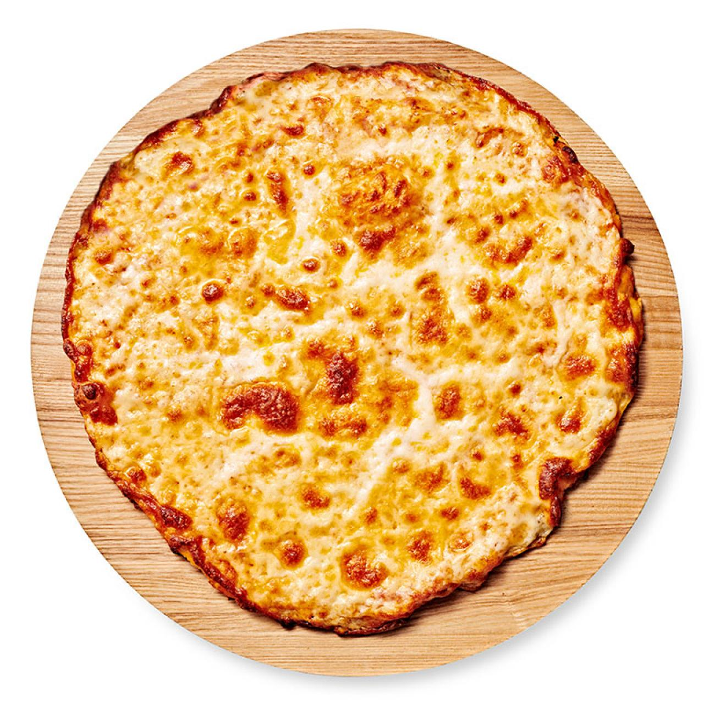

Pizza
Homepage

- Flour
- Yeast
- Sugar
- Marinara Sauce
- Cheese
- Thyme
- Basil
- Oregano
- Put yeast into warm water with the sugar to activate for 15 minutes
- Mix yeast water and flour in a large mixing bowl unitl the dough is not sticky
- Cover the bowl and let the dough rest for 30 minutes, the dough will expand in size
- In the meantime, combine your spices to make an Italian Blend, or buy it premade
- Put more flour on kneading surface so the dough does not stick
- Knead out dough into a large circle and crimpe the edges to creat a crust
- Spread marinara sauce onto the circular dough, along with some of the seasoning
- Place Mozarilla cheese ontop the sauce unitl most of the surface is covered
- Put rest of the seasoning onto the cheese
- Place into oven for about 20 minutes at 400 F
- Take it out carefull let it cooldown for about 15 minutes
- Then cut into 8 equal slices and enjoy